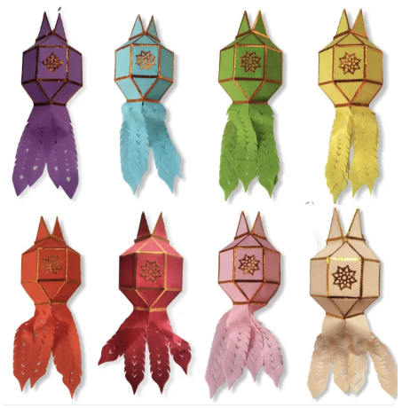

LAZADA

ร้านโคมล้านนา
แม่ละมัยโคมล้านนาเชียงใหม่ เลือกชมสินค้าและสั่งซื้อผ่าน Lazada
ไปที่ร้าน Lazada — ร้านโคมล้านนา (เปิดในแท็บใหม่)สุขสันต์ ฟองฝน / Suksan Fongfon
จากสวนที่รัก สู่เรื่องราวที่อยากแบ่งปัน
แวะชมร้านค้า ทำความรู้จักผม และหยิบเครื่องมือดี ๆ ไปใช้ด้วยกัน
ร้านค้าและช่องทางที่ผมอยากแบ่งปัน

แม่ละมัยโคมล้านนาเชียงใหม่ เลือกชมสินค้าและสั่งซื้อผ่าน Lazada
ไปที่ร้าน Lazada — ร้านโคมล้านนา (เปิดในแท็บใหม่)เลือกชมต้นไม้และดูรายละเอียดสินค้าได้ที่ร้าน Krunongcheck Plants
ไปที่ร้าน Lazada — ร้านต้นไม้ (เปิดในแท็บใหม่)เลือกชมเมล็ดพันธุ์ พร้อมดูรายละเอียดสินค้า ราคา และสั่งซื้อผ่านร้านศรแดงบน Lazada
ไปที่ร้าน Lazada — ร้านเมล็ดศรแดง (เปิดในแท็บใหม่)คอนเทนต์และการแนะนำสินค้า
@kruanongchock
ภาพโคมล้านนาเป็นภาพสินค้าจากร้าน ภาพการ์ดอื่นเป็นภาพประกอบ · ช่อง TikTok Affiliate อาจได้รับค่าคอมมิชชันจากการซื้อผ่านลิงก์แนะนำ
ดาวน์โหลดและติดตั้งบน Chrome
เก็บชื่อสินค้า ภาพ ราคา และยอดขายจากหน้ารายการ TikTok Shop ส่งออกเป็น CSV หรือ Excel พร้อมตัวเลือกเลื่อนหน้าและดาวน์โหลดอัตโนมัติ
ติดตั้งผ่าน Developer mode · ข้อมูลเก็บใน Chrome ของคุณ
ภาพใน Excel ใช้สูตร IMAGE และต้องใช้ Excel รุ่นที่รองรับ
chrome://extensions ใน Chrome แล้วเปิด Developer modetiktok-shop-collector ที่มีไฟล์ manifest.jsonการเก็บข้อมูลขึ้นอยู่กับโครงสร้างหน้า TikTok และสินค้าที่โหลดได้ จึงอาจเก็บได้ไม่ครบ ยังไม่ได้ยืนยันการทำงานบนหน้า TikTok Shop จริงตามเอกสารของรุ่นนี้
งานวิจัยข้าวก่ำและข้าวพื้นเมือง
Fongfon, S., Pusadee, T., Prom-u-thai, C., Rerkasem, B., & Jamjod, S.
อ่านบทความต้นฉบับ ↗ (เปิดในแท็บใหม่)Fongfon, S., Prom-u-thai, C., Pusadee, T., & Jamjod, S.
อ่านบทความต้นฉบับ ↗ (เปิดในแท็บใหม่)สุขสันต์ ฟองฝน, ต่อนภา ผุสดี, ชนากานต์ เทโบลต์ พรมอุทัย และ ศันสนีย์ จำจด
อ่านบทความต้นฉบับ ↗ (เปิดในแท็บใหม่)รายการที่พบและตรวจสอบจากวารสาร/ต้นฉบับ ณ 25 ตุลาคม 2569 · อาจยังไม่ครอบคลุมผลงานทั้งหมด
เวลาในปฏิทิน: ประเทศไทย (Asia/Bangkok) · หากไม่เห็นปฏิทิน ให้เปิดผ่านปุ่มด้านบนและเข้าสู่บัญชี Google ที่มีสิทธิ์เข้าถึง
ผม สุขสันต์ ฟองฝน เว็บไซต์นี้เป็นพื้นที่ส่วนตัวสำหรับรวบรวมร้านค้า ช่อง TikTok และเครื่องมือที่อยากแบ่งปัน ขอบคุณที่แวะมาครับ